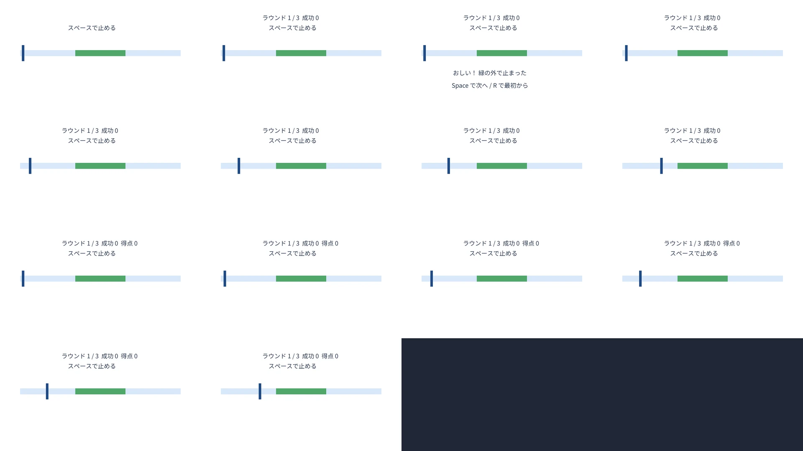
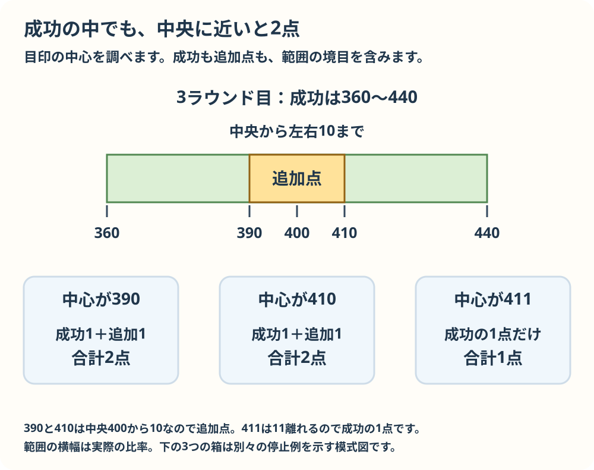

タイミングストップの発展
基本の完成版から3つの機能を順番に追加します。
始める前に
基本編の完成版から始めます。ZIPを展開してできたフォルダーでindex.htmlを開きます。ZIPには基本編の3ファイルが入っています。
WindowsでZIPを展開する（動画）
自分で作った基本版でも同じ内容なら使えます。
各段階の変更を上から順に作業用の script.js に加えます。変更前と同じ範囲を探して、変更後のコードに置き換えてください。保存したら index.html を開くか、再読み込みします。
ステップ 1：3ラウンドにする
このステップの見本を図で見る

このステップの見本
ctx.fillText("R キーでもう一度", 260, 350);
変わったコードの一例（script.js）ctx.fillText("Space で次へ / R で最初から", 200, 350);
見本で確かめること
Spaceで止めて次に進み、3回を終えます。
目標
止める操作を3回続け、成功した回数を数えます。
確認欄までは準備中です。作業を順に進め、確認欄で保存して動作を確かめます。
書く場所と置き換えるコード
ラウンドと成功数を用意する
作業用フォルダーの script.js で、次の範囲を探して置き換えます。
置き換える範囲
let markerX, speed, state, success;
置き換えるコード
let markerX, speed, state, success, round, hits;
round は現在のラウンド、hits は成功回数です。
最初の回から始める
作業用フォルダーの script.js で、次の目印を探し、その直後に書きます。
目印
success = false;
書き足すコード
round = 1;
hits = 0;
1回目から始め、成功回数を0にします。
回数を表示する
作業用フォルダーの script.js で、次の目印を探し、その直後に書きます。
目印
ctx.font = "24px sans-serif";
書き足すコード
ctx.fillText("ラウンド " + round + " / 3 成功 " + hits, 245, 80);
+ で案内の文字と値をつなぎ、全3回のうち何回目かを表示します。
停止後と終了後の案内を出す
作業用フォルダーの script.js で、次の範囲を探して置き換えます。
置き換える範囲
ctx.fillText("R キーでもう一度", 260, 350);
置き換えるコード
ctx.fillText("Space で次へ / R で最初から", 200, 350);
} else if (state === "finished") {
ctx.fillText("3回終了！ R で最初から", 220, 320);
停止中は次へ進む Space と最初からの R を、"finished" では3回終了の案内を描きます。
止めて成功を数える
作業用フォルダーの script.js で、次の目印を探し、その直後に書きます。
目印
success = markerX >= 300 && markerX <= 500;
書き足すコード
if (success) hits++;
中心が300〜500なら success が真になり、hits++ で成功数を1増やします。
次の回か終了へ進む
作業用フォルダーの script.js で、次の範囲を探して置き換えます。
置き換える範囲
if (success) hits++;
}置き換えるコード
if (success) hits++;
} else if (state === "stopped") {
if (round === 3) {
state = "finished";
} else {
round++;
markerX = 80;
speed = 4;
state = "moving";
}
}3回目の結果の後なら "finished" にします。まだ途中なら回数を増やし、線を80、速さを4に戻して動かします。
終了後も R で最初から始める
作業用フォルダーの script.js で、次の範囲を探して置き換えます。
置き換える範囲
} else if (event.key.toLowerCase() === "r" && state === "stopped") {
置き換えるコード
} else if (event.key.toLowerCase() === "r" && state !== "moving") {
移動中以外の R は start() で最初から始めます。
保存後の確かめ方
保存してゲーム画面を更新する（動画）
index.html を再読み込みします。Spaceで止めて次に進み、3回を終えます。終了後のRで1回目から再挑戦します。 この段階の見本を開く
小さな練習
ラウンドの上限3を2に変え、表示と判定を両方直します。 練習後はコードを元に戻してください。
ステップ 2：成功範囲を狭くする
このステップの見本を図で見る
このステップの見本
ctx.fillRect(300, 200, 200, 24);
変わったコードの一例（script.js）const halfWidth = 100 - (round - 1) * 30;
見本で確かめること
1回目から3回目へ進むと緑の帯が狭くなります。
目標
ラウンドが進むと、緑の範囲を狭くします。
確認欄までは準備中です。作業を順に進め、確認欄で保存して動作を確かめます。
書く場所と置き換えるコード
回ごとに目標を狭く描く
作業用フォルダーの script.js で、次の範囲を探して置き換えます。
置き換える範囲
ctx.fillRect(300, 200, 200, 24);
置き換えるコード
const halfWidth = 100 - (round - 1) * 30;
ctx.fillRect(400 - halfWidth, 200, halfWidth * 2, 24);
halfWidth は緑の帯の半分の幅で、1回目は100、2回目は70、3回目は40です。左端を400から半幅だけ戻し、幅を半幅の2倍にして描きます。
表示と同じ範囲で判定する
作業用フォルダーの script.js で、次の範囲を探して置き換えます。
置き換える範囲
success = markerX >= 300 && markerX <= 500;
置き換えるコード
const halfWidth = 100 - (round - 1) * 30;
success = markerX >= 400 - halfWidth && markerX <= 400 + halfWidth;
3回目は 400 - 40 から 400 + 40 の360〜440です。>= と <= なので両端も成功です。
保存後の確かめ方
1回目から3回目へ進むと緑の帯が狭くなります。 この段階の見本を開く
小さな練習
幅を減らす30を20に変えて比べます。 練習後はコードを元に戻してください。
ステップ 3：中央付近に追加点
このステップの見本を図で見る
このステップの見本
ctx.fillText("ラウンド " + round + " / 3 成功 " + hits, 245, 80);
変わったコードの一例（script.js）ctx.fillText("ラウンド " + round + " / 3 成功 " + hits + " 得点 " + score, 245, 80);
見本で確かめること
中央に近い位置で止めると2点、成功範囲の端では1点です。
目標
成功すると1点、中央の近くならさらに1点を加えます。
確認欄までは準備中です。作業を順に進め、確認欄で保存して動作を確かめます。
書く場所と置き換えるコード
得点を用意する
作業用フォルダーの script.js で、次の範囲を探して置き換えます。
置き換える範囲
let markerX, speed, state, success, round, hits;
置き換えるコード
let markerX, speed, state, success, round, hits, score;
hits は成功回数、score は追加点を含む得点です。
得点を初期化する
作業用フォルダーの script.js で、次の目印を探し、その直後に書きます。
目印
hits = 0;
書き足すコード
score = 0;
start() は得点を0にして1回目から始めます。
得点を表示する
作業用フォルダーの script.js で、次の範囲を探して置き換えます。
置き換える範囲
ctx.fillText("ラウンド " + round + " / 3 成功 " + hits, 245, 80);
置き換えるコード
ctx.fillText("ラウンド " + round + " / 3 成功 " + hits + " 得点 " + score, 245, 80);
文字と score をつないで表示します。
中央に近い成功へ追加点を入れる
作業用フォルダーの script.js で、次の範囲を探して置き換えます。
置き換える範囲
if (success) hits++;
置き換えるコード
if (success) {
hits++;
score++;
if (Math.abs(markerX - 400) <= 10) score++;
}
Math.abs() は差の絶対値なので、markerX - 400 が左右どちらでも中央からの距離になります。390と410は距離10で2点、411は距離11で成功の1点だけです。緑の範囲外なら得点は増えません。

3ラウンド目の成功範囲は360から440です。その中でも中央400から10以内なら、成功1点に追加1点が入ります。390と410は境目なので合計2点ですが、411は中央から11離れるので成功の1点だけです。
範囲の幅は実際の比率です。下の3例は別々に止めた位置を比較しており、箱の横位置は数直線ではありません。
保存後の確かめ方
中央に近い位置で止めると2点、成功範囲の端では1点です。Rで得点も戻ります。 この段階の見本を開く
小さな練習
追加点が入る距離10を20に変えて比べます。 練習後はコードを元に戻してください。